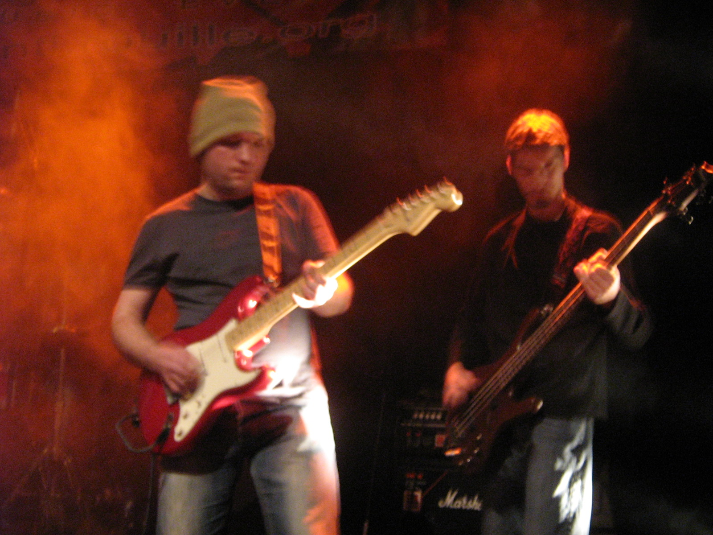

Ines Guns (2009-2012)
A rock/pop rock band playing original songs/covers.
Josephine (singer), Christophe/Cyprien (Bass guitar),
Clément/Sébastien (Drums), Xavier (Keyboard), Benoit (Guitar).
Our influences: Ghinzu, Radiohead,Muse, Pearl Jam, ...
Flying Toasters (2008-2011)
A rock/pop rock band playing original songs/covers.
Adèle (singer), Marc (Bass guitar), Jean-Yves (Drums),
Xavier (Keyboard), Jean-Phi (Guitar), Benoit (Guitar).
Our influences: Mademoiselle K, Muse, ...
Déroutés (2006-2008)
A rock/pop rock band playing original songs/covers.
Laurence (singer), Paul (Guitar/Singer), Sylvain (Drums),
Xavier (Keyb.), Cyprien (Bass Guit.), Tanguy (Sax), Benoit (Guitar).
Original Songs
Music/Lyrics Benoit Coasne
Ines Says (Ines Guns/Benoit Coasne)
Lady Overdrive (Ines Guns/Benoit Coasne)
Berceuse (Benoit Coasne)

Videos
There, There (Radiohead)
by Ines Guns
Corduroy (Pearl Jam)
by Ines Guns
Better Man (Pearl Jam)
by Ines Guns
Concert Ines Guns
Medley from Ines Guns (live MUST 15/04/10)
Un Homme sans Passé (Déroutés on 7ltv)
A previous band by P. Viguier in which I played Guitar (Live record on local TV in Montpellier)